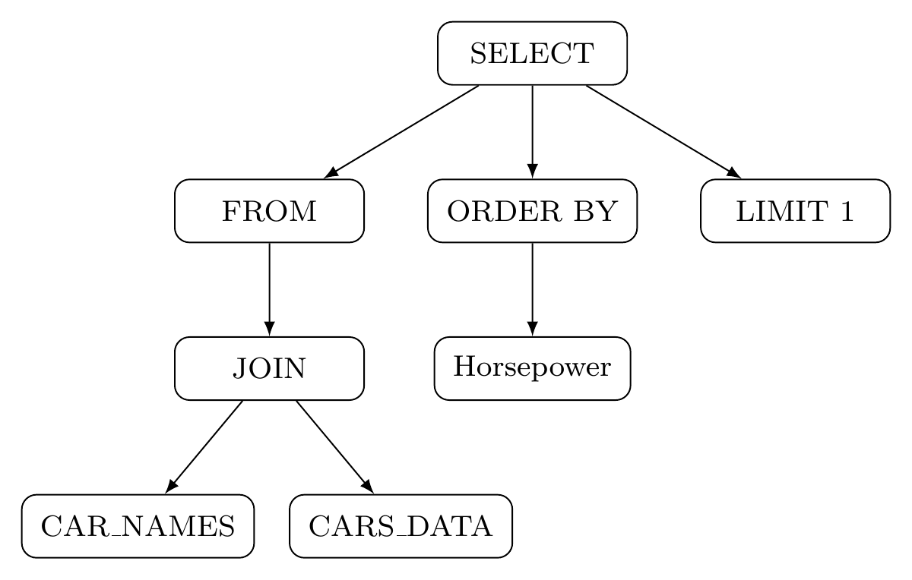
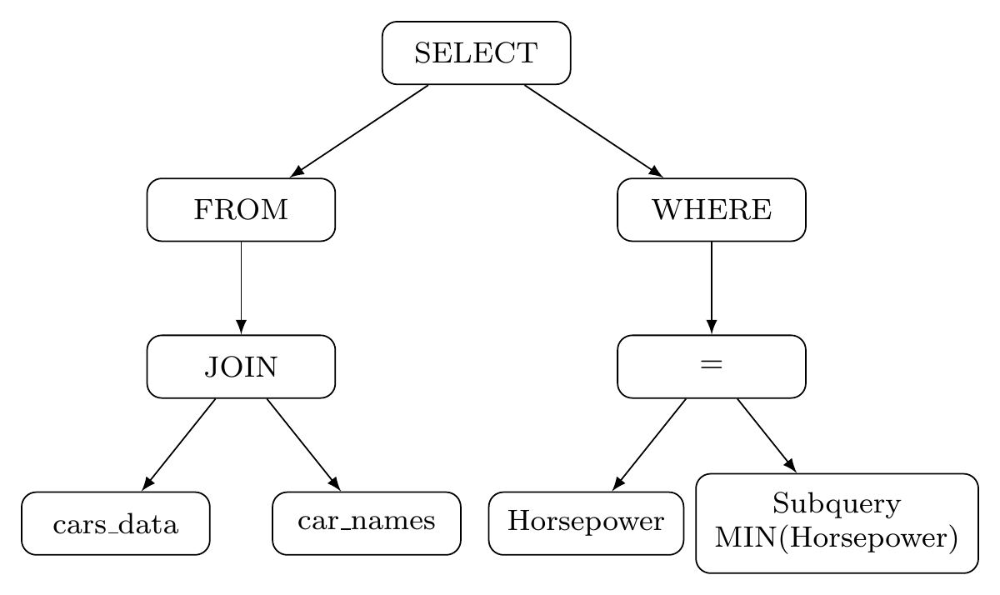

Canonical representation
Parse SQL into ASTs and normalize superficial differences, including alias choices and conjunction order. Compare the resulting canonical representations.
AACL 2026 · Accepted Paper
Correct answers can come from different programs.
We study how SQL structure varies across generations and equivalent inputs.
Large language models (LLMs) can generate SQL queries that return correct answers while differing in program structure. We introduce SQLStructEval, a framework that analyzes this behavior through canonical abstract syntax tree (AST) representations. Experiments on Spider across seven models reveal structural variation within execution-correct generations and sensitivity to question paraphrases and schema presentation. Additional 100-example subsets of BIRD Mini-Dev, Spider-Syn, and Dr.Spider provide scope validation.
As a mitigation case study, a pipeline that generates structured intermediate representations before deterministic compilation improves execution accuracy and structural agreement among correct outputs in the evaluated setting.
Structural diversity is not inherently erroneous: our measures expose differences for further inspection rather than determine semantic correctness. These findings establish structural analysis as a complementary diagnostic alongside execution-based evaluation.
Sample SQL for a fixed intent. Canonicalize its representation. Inspect how structure and execution relate.
Parse SQL into ASTs and normalize superficial differences, including alias choices and conjunction order. Compare the resulting canonical representations.
Measure majority concentration, distinct structures and entropy, both across all outputs and within the execution-correct subset.
Compare dominant structures across question paraphrases and reordered schema presentations that preserve the intended query.
Provide the natural language question, available tables and columns, and foreign-key relationships.
Generate a JSON representation with explicit selection, joins, predicates, aggregation, ordering and limits.
Compile the plan into SQL, then apply the same execution checks and canonical structural analysis used for direct generation.
Spider development set · 1,034 questions · 10 generations per question
Execution accuracy
Compile-style vs. Direct SQL
Correct-subset AST agreement
Up from 0.552 with Direct SQL
Models evaluated
Across four core experiments
| Measure | Direct SQL | DIN-SQL | Compile-style |
|---|---|---|---|
| Execution accuracy | 0.742 | 0.736 | 0.785 |
| AST agreement (correct) | 0.552 | 0.579 | 0.632 |
| Distinct structures (all) | 1.908 | 1.553 | 2.527 |
Agreement among correct outputs and diversity across all outputs describe different distributions. These results assess the complete pipeline; they do not isolate representation, compilation or prompting effects.
For GPT-5-mini, 90.0% of evaluated questions change their majority structure under paraphrasing and 64.0% under schema presentation changes. This experiment uses 200 Spider questions.
Additional 100-question subsets of BIRD Mini-Dev, Spider-Syn and Dr.Spider extend the scope check. They are descriptive subset evaluations, not full-benchmark rankings.
“Which model of the car has the minimum horsepower?”


Both formulations return the same result in the paper’s example. Agreement on one database does not establish equivalence on every database, for example when ties or null values change.
Accepted at AACL 2026. Citation metadata will be updated when the proceedings entry is available.
@inproceedings{zhou2026sqlstructeval,
title = {{SQLStructEval}: Structural Evaluation of LLM Text-to-SQL Generation},
author = {Zhou, Yixi and Zhang, Fan and Guo, Zhiqiao and Chen, Yu and
Zhang, Haipeng and Nakov, Preslav and Xie, Zhuohan},
booktitle = {AACL},
year = {2026},
note = {Accepted; proceedings metadata forthcoming},
url = {https://arxiv.org/abs/2604.06736}
}